A Business Analytics Report for a Retail Card Portfolio
Business Data Analytics · University of Tartu
Author's note. This report and the project behind it are my own work: the design and architecture, the analytical and modelling choices, and the final review are all mine. I used Claude Code (Opus 4.7) as a coding and drafting assistant to speed up implementation and writing, and I checked and validated every result myself. The decision to layer DVC and MLflow on top of the analysis comes from the MLOps course, where I learned to apply production-grade practices to machine-learning projects.
I analysed two years of credit-card activity, covering 155 228 transactions across 996 customers, to answer the questions a card business actually cares about: who is valuable, who is about to leave, and where spending is heading. Three findings drive everything that follows.
First, value is extraordinarily concentrated: just 23% of customers generate 71% of all spending. Second, the customers who spend and the customers who pay interest are largely different people, which means a single retention or marketing playbook will misfire. I therefore identify six distinct segments, each needing its own treatment. Third, churn here means going quiet: the customers slipping away are the low-frequency, low-engagement accounts, and a simple model catches 89% of them in time to act.
Taken together, the analysis points to one organising principle: manage the portfolio by value at risk, not by headcount. The remainder of this report builds the evidence and translates it into specific actions.
A note on units. The source data does not label its currency, so every amount in this report is expressed in euros, abbreviated EUR. This is recorded as an assumption (section 9).
A credit-card book makes money in two very different ways. It earns interchange every time a customer spends, and it earns interest whenever a customer carries a balance. The trouble is that these two engines are powered by different customers: the affluent professional who clears the statement every month is not the same person as the revolver paying interest on a near-maxed card. Treat them identically and the bank either leaves revenue on the table or pushes credit at people who can least afford it.
This project takes a raw transaction export and turns it into the kind of insight that supports those decisions. Working from customer, account and transaction records spanning April 2012 to March 2014, I set out to answer seven practical questions: What types of customers does the business serve? Who is most valuable? Who is at risk of going inactive? What predicts higher spending? Where is the money being spent? Can next quarter's volume be forecast? And the question that matters most: what should the business actually do about it?
The report follows the natural arc of that investigation: understand and clean the data (sections 2–3), find the customer segments (section 4), predict customer value (section 5) and churn risk (section 6), forecast spending (section 7), and then pull it all into a concrete set of recommendations (section 8) before being honest about the limits of the work (section 9).
The raw export contained roughly 156 000 transaction rows and around 1 000 customers, with the usual real-world rough edges. After cleaning, all of it scripted and reproducible via the project's DVC pipeline, I work with a clean panel of 155 228 transactions, 996 customers and 24 months of history.
| Transactions | 155 228 |
| Customers | 996 |
| Transaction window | 1 Apr 2012 – 28 Mar 2014 (~24 months) |
| Oldest account opened | Nov 1988 |
| Working grains | transaction-level (raw) → customer-level (one row per client, for modelling) |
Each transaction carries an amount, merchant detail, country and dates; each customer carries account attributes (credit limit, card type, relationship), balances and payments. All modelling happens at the customer grain: I roll transactions up into one row per customer and engineer the behavioural features that the business actually reasons about: spending totals, transaction frequency, average and peak ticket size, credit utilisation, payment ratio, recency of activity, merchant breadth and account age.
What I cleaned, and why it matters. Three issues were worth a decision rather than a default:
YYYYDDD format (e.g. 2012092) and were converted to
real calendar dates. Without this, every time-based feature would be wrong.txn_id turns
out to be a coded status field with only 9 distinct values, not an identifier),
these are far more consistent with an export glitch than with real repeat
purchases, so I dropped them. They were also quietly inflating
transaction-frequency features.Missingness is concentrated in three fields: channel (24.7%), txn_country
(20.8%) and merchant_group (20.7%). Every feature used for modelling is
complete.
A deliberate fairness choice. The data includes coded gender and race
fields. I exclude both from every predictive model so that customer-value, churn
and segmentation decisions are never driven, even implicitly, by demographics.
They appear only in careful descriptive context. This is revisited in section 9.
Takeaway. After cleaning I have a complete, de-duplicated, two-year view of 996 customers: a trustworthy foundation for the analysis that follows.
Before modelling anything, it pays to look. Four patterns shaped every modelling decision downstream.
Spending is extraordinarily top-heavy. The top 1% of transactions account for 28.9% of total spend, and at the customer level the median customer spends 39 441 EUR against a mean of 97 665 EUR, dragged up more than twofold by a handful of very large customers. The practical consequence is twofold: raw spending figures cannot be fed straight into a distance-based model without distorting it (I deal with this in section 4), and any targeting strategy should be built around value, not transaction counts.
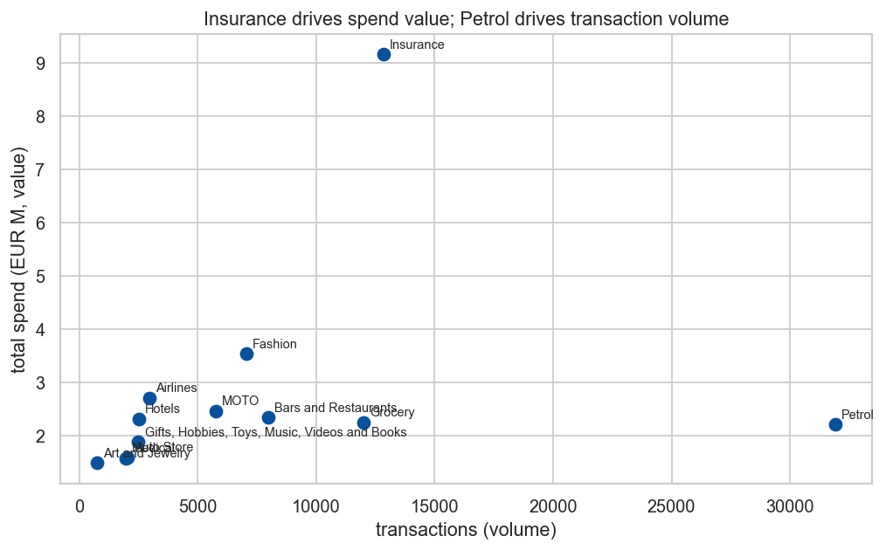
Value and volume live in different merchant categories. Insurance is the single largest source of spend (9.15M EUR, or 9.4% of the total) on only about 12 800 transactions. Petrol is the opposite story: the busiest category by far at 31 907 transactions, but averaging just 69 EUR a swipe. The lesson for marketing is that high-value categories (Insurance, Airlines, Hotels) call for margin and loyalty plays, while high-frequency categories (Petrol, Grocery) are where cashback and habit-forming offers earn their keep.
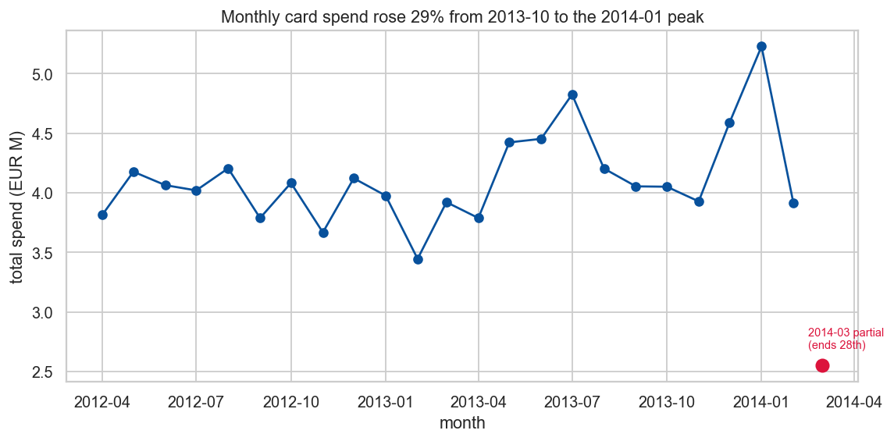
Monthly card spend climbed 29%, from 4.05M EUR in October 2013 to a 5.23M EUR peak in January 2014. One caveat is critical: the final month, March 2014, is partial, since the data stops on the 28th and the month contains only 3 429 transactions against a full-month median of 6 655. Left unaddressed, that truncation would manufacture a fake "decline" and inflate any inactivity measure, so I exclude it from the forecast (section 7) and treat it carefully in the churn window (section 3.5).
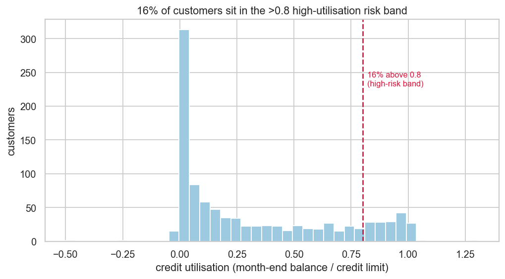
Credit utilisation (the share of the limit a customer is using) sits at a comfortable median of 0.16, but the tail is long: 16% of customers are above 0.8, the conventional high-risk threshold. These customers are simultaneously the bank's interest-income engine and its credit exposure, which makes utilisation a natural axis for both segmentation and risk monitoring.
The dataset has no "cancelled" column, so I engineer a business proxy: a customer is at risk if they made no transaction in the most recent month of the window. That flags 18.5% of customers. Because the final month is partial (section 3.3), this should be read as an upper bound, and the window length is a tunable parameter. Both points are examined when I model churn in section 6.
Takeaway. Spending is concentrated and top-heavy, value and volume are decoupled across merchants, the trend is up but truncated at the end, and a meaningful minority of customers carry high credit risk. These four facts are the reason the segmentation in section 4 looks the way it does.
I grouped customers with K-Means on nine financial and behavioural features (credit limit, balance, total spend, transaction count, average ticket, utilisation, payment ratio, account age and merchant breadth). The skew flagged in section 3.1 is not a nuisance here: it is a genuine obstacle. A naive pipeline let a few "whale" customers dominate the distance calculations and collapsed everything into a meaningless two-cluster whales-versus-everyone split. The fix is to winsorise each feature to its 1st–99th percentile, apply a Yeo-Johnson power transform to pull in the skew, then reduce to two principal components before clustering, which keeps every customer while removing the whale distortion.
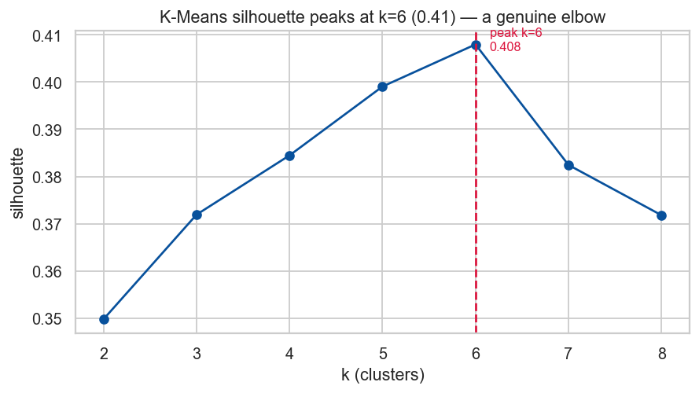
Searching the number of clusters from 2 to 8, the silhouette score rises to a clear peak at k=6 (0.41): a real elbow, not the degenerate k=2 from before. To be sure the six groups are a property of the customers and not an artefact of one algorithm, I re-ran the same problem with two other methods:
| Method | Silhouette | Agreement with K-Means (ARI) |
|---|---|---|
| K-Means (chosen) | 0.41 | — |
| Agglomerative (Ward) | 0.32 | 0.47 |
| Gaussian Mixture | 0.31 | 0.58 |
K-Means gives the cleanest separation and lands on substantially the same partition as the probabilistic Gaussian mixture (ARI 0.58), so the structure is stable. I keep the simplest, most explainable model.
Profiles are read off the original, untransformed numbers: the transform is only for measuring distance, not for interpretation. The picture below colours each segment by how far it sits from the average segment on each feature; the table gives the median figures in EUR.
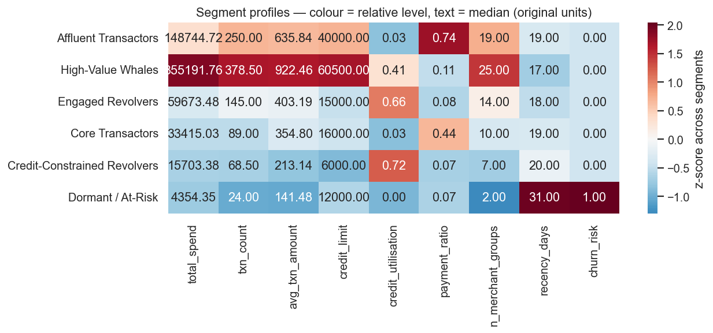
| Segment | Customers | Share of spend | Median spend (EUR) | Utilisation | Pays off balance? | In one line |
|---|---|---|---|---|---|---|
| Affluent Transactors | 171 (17%) | 36% | 148 745 | 0.03 | Yes (0.74) | Big spenders who clear the balance; pure interchange |
| High-Value Whales | 60 (6%) | 35% | 355 192 | 0.41 | Partly | The top tier; widest merchant range; stickiest |
| Engaged Revolvers | 189 (19%) | 13% | 59 673 | 0.66 | No (0.08) | Active and broad, but carry balances; interest income |
| Core Transactors | 279 (28%) | 11% | 33 415 | 0.03 | Mostly | The mainstream middle of the book |
| Credit-Constrained Revolvers | 204 (20%) | 4% | 15 703 | 0.72 | No (0.07) | Low limits, maxed out, churn-prone (24%) |
| Dormant / At-Risk | 93 (9%) | 0.5% | 4 354 | 0.00 | — | Barely active; 53% already churn-flagged |
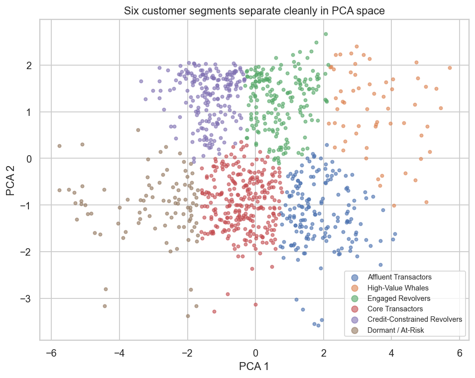
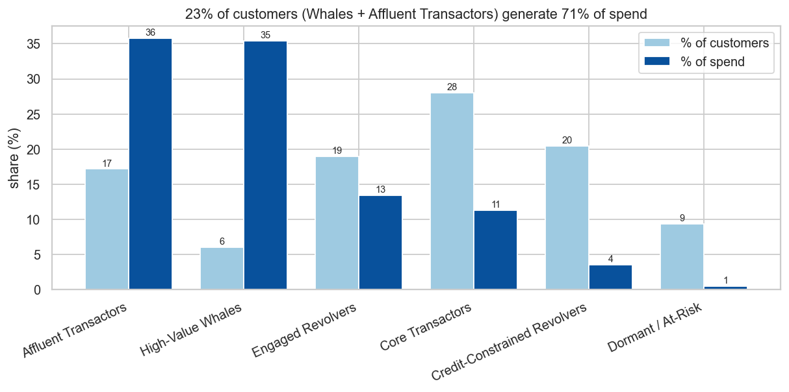
Counting customers badly misleads here. The two most valuable segments, Affluent Transactors and High-Value Whales, are just 231 people (23% of the book), yet they account for 71% of all spending. At the other end, the two weakest segments (Dormant and Credit-Constrained Revolvers) make up 30% of customers but only 4% of spend. Any plan that spreads attention evenly across customers is, in effect, under-serving the 23% who pay for everything.
Takeaway. Six segments, three jobs: protect and grow the top (Whales, Affluent Transactors), manage the credit of the revolvers, and spend efficiently on the long tail. Section 8 turns this into specific moves.
Following the brief, Customer Lifetime Value is defined as total spend × an assumed 2% revenue rate. There is a subtle trap here: because CLTV is just a rescaling of total spend, handing the model any spend-based feature would let it "predict" the answer it was given. I therefore deliberately withhold every spend-arithmetic feature (total spend, transaction count, average and peak ticket) and ask a more useful question instead: from what the bank knows about an account, how much value will this customer generate?
I compared three models on a held-out 20% of customers.
| Model | R² | MAE (CLTV, EUR) | RMSE (CLTV, EUR) |
|---|---|---|---|
| Linear Regression | 0.52 | 1 496 | 3 756 |
| Random Forest | 0.56 | 1 231 | 3 596 |
| Gradient Boosting | 0.62 | 1 113 | 3 337 |
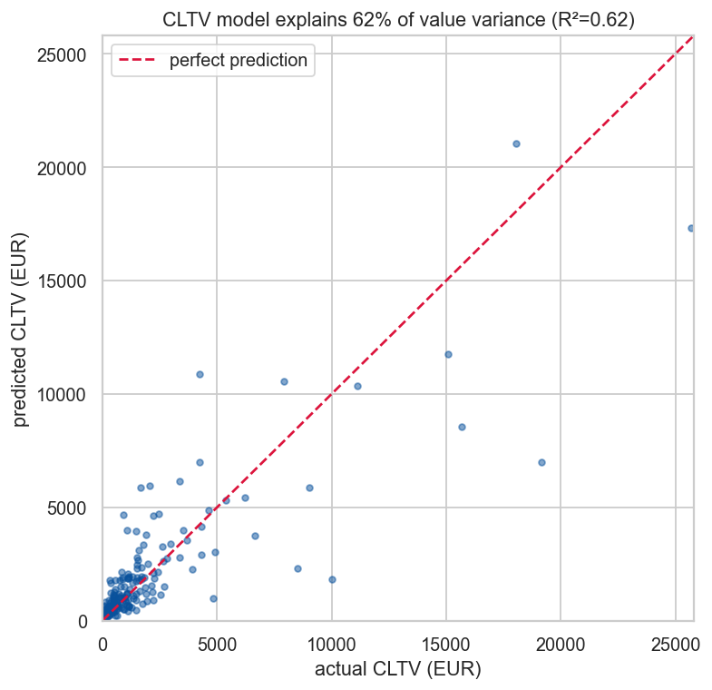
Gradient Boosting explains 62% of the variation in customer value using account attributes alone: a genuinely useful result given that the most obvious predictors were held back on purpose. Linear regression sets a respectable floor at 52%; the tree ensembles add the rest by capturing non-linear interactions.
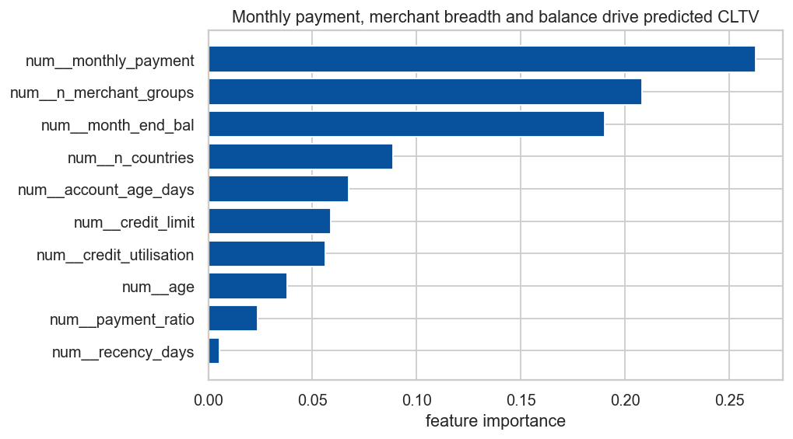
The model leans most on monthly payment, merchant breadth, month-end balance and account tenure, and notably not on the raw credit limit. In plain terms, how much a customer pays each month and how widely they use the card tells us more about their value than the limit the bank happened to grant them.
Takeaway. The bank can score value potential at the account level, before a full spending history accumulates. That is useful for prioritising upgrades and for spotting high-limit, low-value accounts ripe for activation. One honest caveat: the error is material in monetary terms, so this is a tool for ranking customers, not for quoting a number.
Here I predict the section 3.5 churn proxy. The leakage trap is even sharper than
in section 5: since "churn" is defined by recency of activity, any recency
feature would hand the model the answer. I exclude recency_days and
last_txn_date entirely and predict inactivity from spending and account
behaviour. Because only 18.5% of customers are positive, the models use balanced
class weights. And here is the key business choice: I judge them primarily on
recall. Missing a customer who is about to go quiet is expensive; a false alarm
just means an unnecessary, low-cost retention nudge.
| Model | Recall | Precision | F1 | ROC-AUC |
|---|---|---|---|---|
| Logistic Regression | 0.89 | 0.33 | 0.49 | 0.79 |
| Random Forest | 0.35 | 0.72 | 0.47 | 0.80 |
The two models stake out opposite corners of the same trade-off. Logistic Regression catches 89% of churners; Random Forest is more precise but would let two-thirds of at-risk customers walk out unnoticed. For a retention use case that is the wrong kind of mistake, so I choose Logistic Regression.
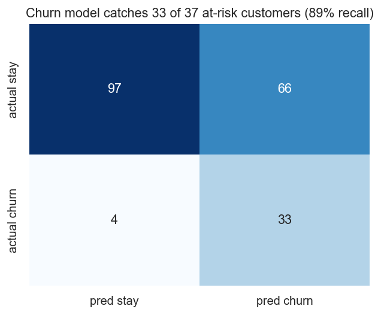
On the held-out customers, the chosen model flags 33 of the 37 customers who actually churned and misses only 4, at the cost of 66 false alarms. Put in business terms: chase every name on this list and you reach almost everyone who was genuinely leaving, while the "wasted" outreach lands on customers who are cheap to contact anyway.
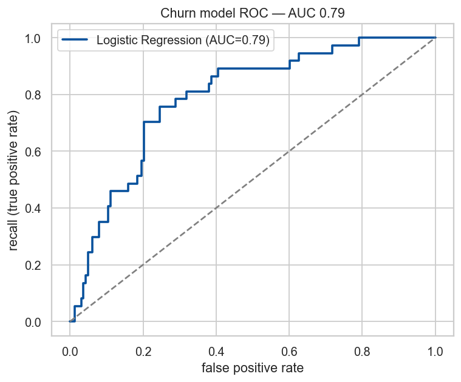
The decision threshold is a dial the business can turn: a cheap email campaign can afford to cast wide (high recall), while an expensive concierge call should be aimed more precisely. The single strongest predictor, by a wide margin, is low transaction frequency: infrequent users are the ones who lapse, exactly the behaviour that defines the Dormant / At-Risk segment from section 4.
Takeaway. A deliberately recall-tuned model gives the bank a reliable early-warning list of who is going quiet, and section 8 explains how to act on it without overspending.
I aggregated the ledger into a monthly total-spend series, trimmed the partial March-2014 month (section 3.3) to leave 23 clean months, held out the last three for testing, and compared a moving-average baseline against ARIMA.
| Method | MAPE | RMSE (EUR) |
|---|---|---|
| Moving average | 12.8% | 780K |
| ARIMA(1 1 1) | 13.2% | 844K |
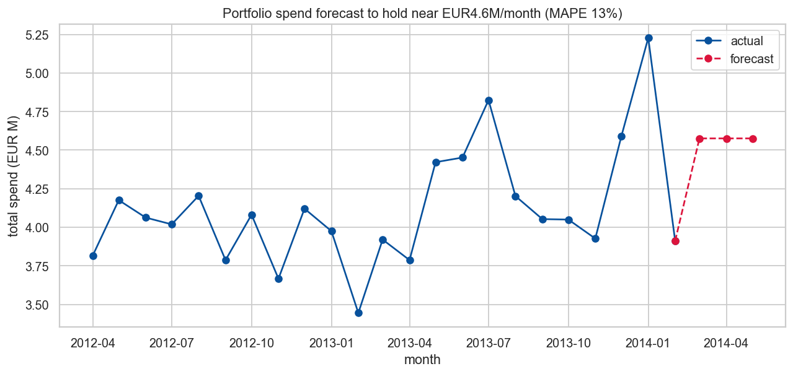
On a short, essentially flat series the moving-average baseline narrowly beats ARIMA: a healthy reminder that sophistication is not the same as accuracy when there is no strong trend or seasonality to exploit. The forecast holds portfolio spend near 4.6M EUR per month over the next quarter, within a roughly ±13% band.
Takeaway. For short-horizon planning the business can budget on a flat ~4.6M EUR monthly run-rate. This is a planning baseline rather than a precision instrument; the wide band reflects real month-to-month volatility and the short history, and with more data a seasonal model should be revisited to capture holiday peaks like the January spike.
The threads above converge on one principle, manage by value at risk, not by headcount, and on a short list of concrete moves, ordered by the revenue they protect or create.
1. Ring-fence the top 23%. Affluent Transactors and High-Value Whales are 231 customers carrying 71% of spend. Put the Whales on dedicated relationship management with premium rewards and proactive retention: losing one is the spend equivalent of losing nine median customers. Grow the Affluent Transactors' wallet share with premium-card upgrades and travel/lifestyle perks; they carry almost no credit risk, so the only question is how to make them spend more with us.
2. Run the revolvers as a managed credit business. Engaged Revolvers (19% of customers, carrying real balances) are the interest-income engine: offer responsible credit-line increases to reliable payers while watching delinquency. Credit-Constrained Revolvers, by contrast, are maxed out on small limits with 24% churn risk and only 4% of spend; serve them cheaply, review limits only where creditworthiness supports it, and do not chase growth here.
3. Make retention a targeted, two-tier programme. Feed the section 6 churn model's high-probability list into retention, but split it by value: automated, low-cost win-back for the long tail of Dormant accounts (0.5% of spend, so do not overspend), and personal outreach reserved for high-CLTV names where the section 5 value score says real revenue is at stake. This is how a 33-of-37 recall rate turns into protected revenue rather than wasted budget.
4. Tailor merchant offers to the value-vs-volume split. Use margin and loyalty plays in high-value categories (Insurance, Airlines, Hotels) and frequency-building cashback in high-volume ones (Petrol, Grocery).
5. Plan on a flat run-rate, and watch utilisation. Budget marketing and operations against ~4.6M EUR monthly spend, and keep a standing eye on the 16% of customers above 0.8 utilisation as both a revenue and a risk signal.
Several caveats bound how far these results should be pushed.
gender, numeric race and high-cardinality
card and merchant codes are used as opaque levels.race and gender from every predictive
model to avoid encoding demographic bias into value, churn or segmentation
decisions. High-utilisation and credit-line recommendations should be applied
with responsible-lending safeguards, not used to push credit at financially
stretched customers.Two years of transactions, once cleaned and reframed around the business, tell a clear story. The portfolio is not a uniform mass of customers but six distinct groups, and its economics are dominated by a small, high-value minority: 23% of customers, 71% of spend. I can estimate customer value from account behaviour well enough to rank who deserves investment (R² 0.62), catch 89% of customers going quiet in time to intervene, and plan on a steady ~4.6M EUR monthly run-rate for the quarter ahead.
The through-line of every recommendation is the same: stop treating customers as interchangeable. Protect the value concentrated at the top, run the revolvers as a deliberate credit business, and spend retention budget where revenue is genuinely at risk. Do that, and the analysis stops being a description of the past and starts being a lever on the bank's future revenue.
Beyond the analysis itself, the project is built on two MLOps tools, DVC and MLflow, so that every result can be reproduced from the raw data and every modelling experiment is recorded. The idea to layer them on top of the coursework comes from the MLOps course; together they turn a collection of notebooks into a versioned, auditable pipeline.
DVC (Data Version Control) sits next to git and handles the two things git is bad
at: large data files and multi-step pipelines. Git keeps the code, while DVC
keeps the heavy or sensitive artefacts (the raw dataset, the cleaned tables, the
trained models) outside git and records only a small pointer to them. That is why
the raw data.csv is git-ignored but DVC-tracked: the dataset is never committed,
yet anyone with access can restore the exact version the analysis used.
The pipeline is declared in dvc.yaml as seven stages: clean to features,
then one stage for each of the four models. Every stage lists its dependencies
(the script and its input files), its parameters (read from params.yaml, the
single source of truth for every setting), its outputs, and its metrics. Because
DVC knows this dependency graph, dvc repro re-runs only the stages whose inputs
actually changed. Adjusting, say, the churn window in params.yaml re-runs the
affected stages and leaves the rest cached, and the whole analysis rebuilds from
raw data with a single command. The result is a clear data lineage and a workflow
that is reproducible rather than a sequence of manual steps.
MLflow records what each modelling run actually did. Every model stage opens an
MLflow run tagged with its track (segmentation, regression, classification or
forecasting) and logs three things: the parameters used (for example the cluster
search range, the revenue rate, or the feature list), the resulting metrics
(silhouette, R², recall, MAPE), and the fitted model itself. Runs are written to
a local mlruns/ store; launching mlflow ui opens a dashboard where runs can be
filtered by track and compared side by side. The project currently holds nine
logged runs across the four tracks, which is what makes statements like "Gradient
Boosting beat the linear baseline" or "this k scored highest" auditable rather
than asserted.
DVC guarantees that the data and pipeline are versioned and reproducible; MLflow records what each run produced so that modelling results stay comparable and traceable. One builds the artefacts, the other explains how they came to be.
src/data/clean.py, src/data/features.py (DVC stages clean, features).src/models/train_segmentation.py, train_regression.py, train_classification.py, train_forecasting.py (one DVC stage each; metrics in metrics/, runs logged to MLflow).01_eda · 02_segmentation · 03_regression · 04_classification · 05_forecasting (all executed).scripts/build_report_figures.py from the pipeline outputs.dvc repro rebuilds the pipeline; mlflow ui opens the experiment dashboard.